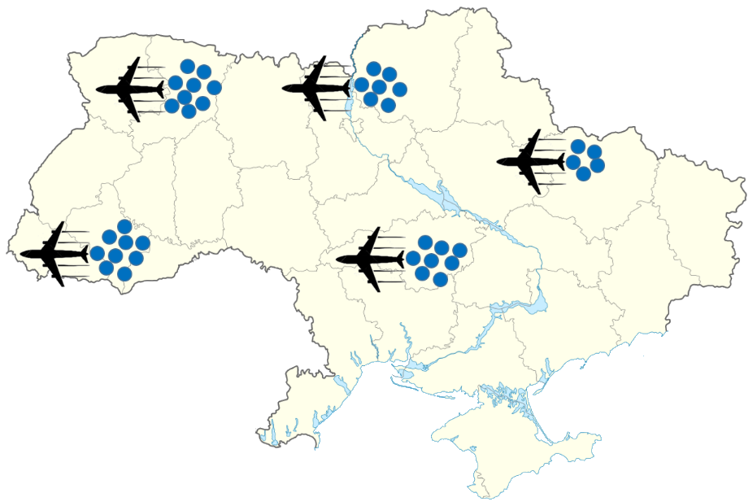

Evacuation

Evacuation is used when Peace Corps cannot adequately manage the safety and security of Volunteers, or continue normal operations. During an Evacuation, Volunteers depart country, either to a nearby country or to the United States.
Evacuation will be considered in cases like these:
• Terrorist attacks continue throughout the country
• All or large part of the country may be captured/invaded by the enemy
• Severe civil unrest
• Large scale nuclear accident took place, which affects all or most of the country
• Severe natural disaster
• Outbreak of disease that is beyond host country’s ability to control